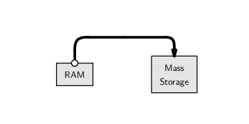

6 R
6.1 O que é o R
Um dialeto do S.
“The statistical software should help, by supporting each step from user to programmer, with as few intrusive barriers as possible.”
“… to turn ideas into software, quickly and faithfully.”
— John M. Chambers
- Ambiente estatístico para análise de dados e produção de gráficos
- Uma completa linguagem de programação:
- Interpretada (contrário de compilada)
- Orientada a objetos:
Tudo no R é um objeto…
- Livre distribuição (código-aberto)
Mais de 6000 pacotes adicionais
6.2 Histórico
- 1980: Linguagem S: desenvolvida por R. Becker, J. Chambers e A. Wilks (AT&T Bell Laboratories)
- 1980: Versão comercial: S-Plus (Insightful Corporation)
- 1996: Versão livre: R desenvolvido por R. Ihaka e R. Gentleman (Universidade de Auckland)
- 1997: R Development Core Team
- Hoje: 20 desenvolvedores principais e muitos outros colaboradores em todo o mundo
- Estatísticos, matemáticos e programadores
6.3 Configuração inicial
6.3.1 Configurando o diretório de trabalho
- O diretório de trabalho é uma pasta onde o R será direcionado. Todos os arquivos que serão importados (base de dados, …) ou exportados (base de dados, gráficos, …) por ele ficarão nesta pasta.
Existem duas maneiras de configurar o diretório de trabalho (suponha que vamos usar a pasta
~/estatcomp1):1)Utilizando a funçãosetwd()dentro do R:
setwd("~/estatcomp1")2)Pelo menu do RStudio emSession > Set Working Directory > Choose Directory...Confira o diretório que está trabalhando com a função
getwd()6.4 O R como uma calculadora
O símbolo > indica que o R está pronto para receber um comando:
> 2 + 2[1] 4O símbolo > muda para + se o comando estiver incompleto:
> 2 *
+ 2[1] 4Espaços entre os números não fazem diferença:
> 2+ 2[1] 46.5 Para onde vão os resultados?
> 1 + 3 + 5 + 7[1] 16

- Note que o resultado é apenas mostrado na tela, nada é salvo na memória (por enquanto)
6.6 O editor de scripts
- Para criar rotinas computacionais é necessário utilizar um editor de scripts.
- Clique em
File > New file > R script. Salve com a extensão.R. - Para enviar comandos diretamente para o console, selecione-os e
aperte
Ctrl + <Enter>. - Para adicionar comentários ao script, utiliza-se o símbolo
#antes do texto e/ou comandos. O que estiver depois do símbolo não será interpretado pelo R. Portanto:
2 + 2 # esta linha será executada
# 2 + 2 esta linha não será executada6.7 Operadores aritméticos
| Operador | Significado |
|---|---|
+ |
adição |
- |
subtração |
* |
multiplicação |
/ |
divisão |
^ |
potência |
exp() |
exponencial |
sqrt() |
raíz quadrada |
factorial() |
fatorial |
log(); log2(); log10() |
logaritmos |
6.8 Ordens de execução
As operações são realizadas sempre seguindo as prioridades:
- De dentro para fora de parênteses
() - Multiplicação e divisão
- Adição e subtração
> 5 * 2 - 10 + 7[1] 7> 5 * 2 - (10 + 7)[1] -7> 5 * (2 - 10 + 7)[1] -5> 5 * (2 - (10 + 7))[1] -756.9 Exercícios
- Calcule a seguinte equação: \(32 + 16^2 - 25^3\)
- Divida o resultado por \(345\)
- Qual o resultado da expressão \(\frac{e^{-2} 2^{4} - 1}{4!}\)?
- E do logaritmo desta expressão?
6.10 “Salvando” resultados
Do exercício anterior
> x <- 32 + 16^2 - 25^3
> x[1] -15337> x/345[1] -44.45507> (y <- (exp(-2) * 2^4 - 1)/factorial(4))[1] 0.04855686> log(y)[1] -3.02502Quando criamos uma variável (x, y), ela fica armazenada
temporariamente na memória RAM.

Para saber quais objetos estão criados, usamos a função ls()
> ls()[1] "x" "y"Estas variáveis ficam armazenadas no chamado workspace do R
- O workspace consiste de tudo que or criado durante uma sessão do R, armazenado na memória RAM
Para efetivamente salvar esas variáveis, podemos armazenar esse workspace
do R em disco, em um arquivo chamdo .Rdata


- Quando o R é iniciado em um diretório com um arquivo
.Rdata, as variáveis salvas são automaticamente carregadas - No entanto, é sempre melhor salvar os dados e o script, assim é possível gerar os resultados novamente, sem salvar nada sem necessidade
- Veremos mais pra frente como salvar variáveis específicas, por exemplo, resultados de uma análise que leva muito tempo para ser executada
- O mais importante é salvar o código, assim sabemos como chegamos a determinado resultado, e podemos recriá-lo depois
6.11 Finalizando o programa
A qualquer momento durante uma sessão você pode usar o comando
> save.image()No RStudio:
File > Save As...- Na janela que abrir, digite o nome do arquivo (por exemplo
script_aula1) e salve - Automaticamente o script será salvo com a extensão
.R(nesse casoscript_aula1.R) no diretório de trabalho que você configurou no início
Alternativamente, você pode também salvar toda sua área de trabalho,
clicando em Workspace > Save As Default Workspace. Este
processo irá gerar dois arquivos:
.Rdata: contém todos os objetos criados durante uma sessão. Não é necessário (e nem recomendado) dar um nome antes do ponto. Dessa forma, a próxima vez que o programa for iniciado neste diretório, a área de trabalho será carregada automaticamente..Rhistory: um arquivo texto que contém todos os comandos que foram digitados no console.